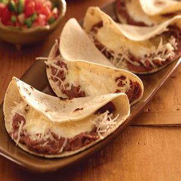

Baleada Recipe

Description
The Honduran baleada is a traditional dish that consists of a flour tortilla filled with
refried beans, cheese, and optionally other ingredients such as avocado, egg, meat, or sour cream.
It is typically served as a breakfast or snack food and is a popular street food in Honduras.
Ingredients
Flour tortillas
Refried beans
Queso fresco or a similar crumbly cheese
Optional: avocado, scrambled egg, sour cream, meat (such as chorizo or grilled chicken)
Steps
- Heat a skillet over medium-high heat.
- Warm the flour tortillas in the skillet for about 30 seconds on each side until they are soft and pliable.
- Spread a generous amount of refried beans in the center of each tortilla.
- Sprinkle crumbled queso fresco on top of the beans.
- Add any additional ingredients you like, such as avocado, scrambled egg, sour cream, or meat.
- Fold the sides of the tortilla in towards the center, then fold the top and bottom in towards the center to create a rectangular shape.
- Return the baleada to the skillet and cook for another 1-2 minutes on each side until the cheese is melted and the tortilla is slightly crispy.
- Serve hot and enjoy!